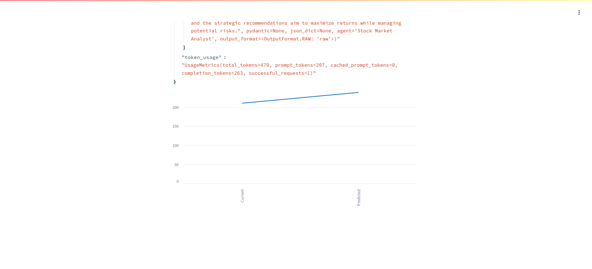
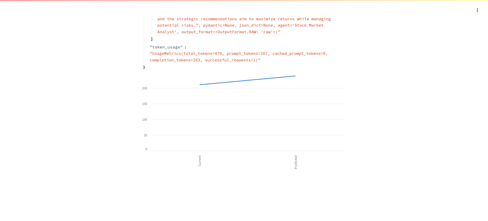
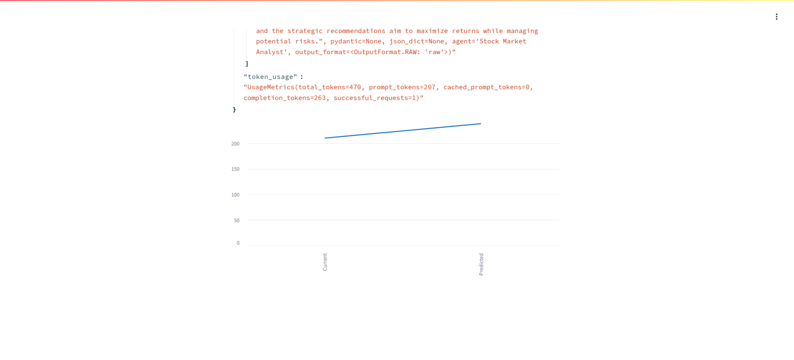

The Market Prediction and Portfolio Impact Analysis project is a tool designed to assist traders in assessing the potential impact of various market events on their portfolios. Using a combination of historical market data, real-time feeds, machine learning algorithms, and statistical models, the system predicts future market trends and visualizes how these trends will influence an investor's portfolio.
My Contribution: I primarily focused on the development of the market prediction input handler, real-time data integration, ML-based forecasting models, and portfolio impact visualization. Additionally, I worked on enhancing the follow-up query handling functionality, allowing traders to refine their predictions.
| Sprint | Objective | Outcome |
|---|---|---|
| Sprint 1 | MVP: Develop the market prediction engine and integrate Yahoo Finance API | Completed input handler and data integration |
| Sprint 2 | Infrastructure Spike: Enhance models, integrate real-time data, correlation analysis | Real-time feeds + statistical models implemented |
| Sprint 3 | Experimental Agent Selection: Test ML models, CrewAI optimization | CrewAI integrated with visual impact representation |
| Sprint 4 | Working MVP: Finalize and optimize prediction engine | Refactored forecasting and follow-up logic |
| Sprint | User Story/Task | Key Tasks |
|---|---|---|
| Sprint 1 | SC1.1: Input Handler + Yahoo Finance API | Created handler, integrated API, fetched data |
| Sprint 2 | SC1.2: Historical and Real-Time Feeds | Integrated data feeds |
| SC1.3: Statistical and ML Forecasting | Built ML/statistical models | |
| SC1.4: Portfolio Correlation Analysis | Developed correlation system | |
| SC1.5: Unit Testing | Tested prediction outputs | |
| SC1.6: Charting Library | Used Plotly/Matplotlib | |
| Sprint 3 | SC1.7: CrewAI Integration | Improved prediction accuracy |
| SC1.8: Visual Portfolio Impact | Developed charts for visualization | |
| SC1.9: Follow-Up Query Handling | Enhanced query processing logic | |
| Sprint 4 | SC1.10: Forecasting Optimization | Refined main logic |
| SC1.11: Follow-Up Logic Improvements | Processed multiple adjustments | |
| SC1.12: ML Prediction Flow | Enhanced speed + accuracy |

View full history at the commit page.